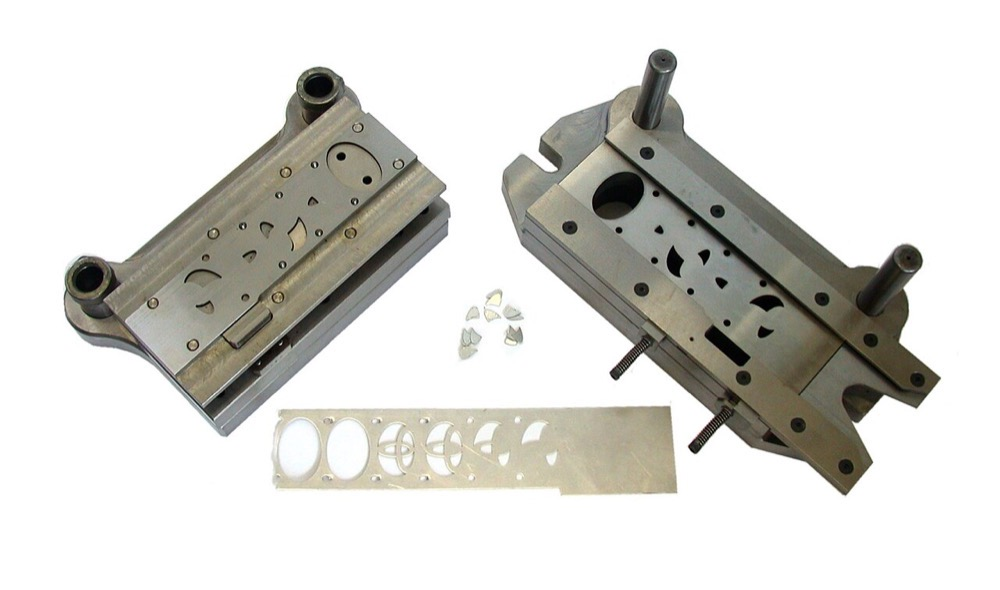
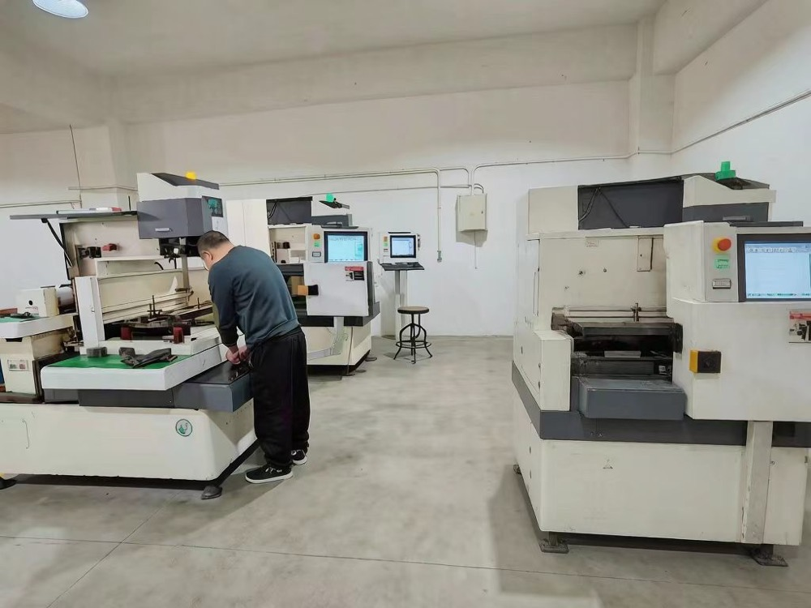

後継者がいない中小の金型・精密部品メーカーを、融資を使って1社ずつ買収する。設計・加工・測定の設備を複数社で共有し、受注を工場間で割り振って稼働率を上げる。国内の大手メーカーに加え、北米・メキシコ・東南アジアの工場に向けて金型を販売する。
金型の国内生産高は2024年に約1兆4,548億円、事業所数は4,077、就労者は約7万人である。ピークの1991年は生産高約2兆円、13,000事業所、就労者12万人だった1。需要業界別では自動車・二輪・輸送用車両機器が73.0%を占める1。
| 従業者規模 | 事業所数 | 構成比 | 生産額 | 構成比 |
|---|---|---|---|---|
| 9人以下 | 2,545 | 62.4% | 1,366億円 | 9.4% |
| 10〜19人 | 679 | 16.7% | 1,555億円 | 10.7% |
| 20〜29人 | 347 | 8.5% | 1,505億円 | 10.3% |
| 30〜99人 | 417 | 10.2% | 4,056億円 | 27.9% |
| 100人以上 | 89 | 2.2% | 6,067億円 | 41.7% |
| 合計 | 4,077 | 100.0% | 1兆4,548億円 | 100.0% |
2024年、製造業事業所調査の産業別集計を日本金型工業会が整理した値1。100人以上は100〜299人の82所と300人以上の7所の合計。
本案の買収対象は10〜99人の1,443事業所で、生産額の合計は約7,116億円である。精密部品を含めた市場の規模は、部品の定義が広く本ページでは算定していない。

世界35か国の金型生産高は約13兆1,221億円で、中国が7兆382億円で53.6%を占める。日本は9,771億円で7.4%である1。日本の値は調査の年と集計の方法が国内統計と異なる。2025年の金型の輸出は2,040億円で前年比5%増、輸入は1,339億円で5.4%減である。輸出先の首位は米国の715億円である1。

| 年 | 変化 | 数値 |
|---|---|---|
| 1991〜2024年 | 金型の事業所数の減少 | 13,000から4,077へ約69%減った。生産高は約2兆円から約1兆4,548億円へ約27%減った1 |
| 2024年 | 小規模事業所の比率 | 9人以下が62.4%を占め、生産額では9.4%に留まる1 |
| 2025年 | 全国の後継者不在率 | 50.1%で7年連続の改善。業種別の最高は建設業の57.3%2 |
| 2025年8月 | 中小企業庁が中小M&A市場改革プランを公表した | 中小企業の事業承継とM&Aの市場の整備を進める3 |
| 2025年 | 金型の輸出入 | 輸出は2,040億円で5%増、輸入は1,339億円で5.4%減1 |
事業所の数が減る一方で、生産高の減少はより小さい。小規模な事業所が廃業し、受注が中堅以上の事業所に集まっている。後継者不在率は改善しているが、それでも約半数の企業で後継者が決まっていない2。金型の業種別の不在率は確認できなかった。
| 種類 | 事業者 | 動き |
|---|---|---|
| 大手の金型メーカー | 従業者100人以上の89事業所 | 生産額の41.7%を占める1。1事業所当たりの平均は約68億円である。企業単位の売上順位は確認できなかった |
| 自動車メーカーの内製 | 自動車メーカーと大手部品メーカー | 金型の一部を社内で製造する。内製の規模は上記の統計に含まれない |
| 海外の金型メーカー | 中国の金型メーカー | 世界の生産高の53.6%を占める1。日本の輸入の58%が中国からである1 |
| 中小企業の連続買収 | 投資ファンド、ロールアップ型の上場企業 | 他業種ではロールアップを掲げる上場企業がある4。金型に特化した買収会社の売上と社数は確認できなかった |
首位の条件 金型の国内生産高1兆4,548億円で首位になるには、数百億円の金型の売上が必要と考える。条件は3つある。①プレス型・プラスチック型など型種を絞り、同じ型種の会社を集中して買収すること。②設計と測定を本部に集約し、買収した工場の設備の稼働率を上げること。③国内の自動車向けに偏った受注を、海外の工場と自動車以外の業界に分散すること。
1社目は、従業者30〜50人・売上高5億円前後・後継者のいない金型メーカーとする。創業者が社長に就き、旧経営者を技術顧問として残す。
| 用途 | 金額 | 検証すること |
|---|---|---|
| 検索期間の生活費と活動費 6か月 | 500万円 | 地銀と商工会議所からの紹介で条件に合う案件を何件得られるか |
| 財務・設備・労務の調査、仲介手数料 | 900万円 | 工作機械の残存価値と更新時期、熟練工の年齢構成 |
| 1社目の株式取得の自己資金 | 2,200万円 | EBITDA約5,000万円の会社を約2.5億円で取得できるか |
| 海外向けの営業の準備 | 400万円 | 北米と東南アジアの日系工場から見積の依頼を何件得られるか |
| 合計 | 4,000万円 |
| 月 | 計画 |
|---|---|
| 1〜3月目 | 対象地域と型種を1つに絞る。生産額の多い愛知・神奈川・大阪・静岡・岐阜から1県を選ぶ1。条件を満たす会社を30社集める |
| 4〜6月目 | 3社と面談し1社と基本合意する。主要な取引先に、株主の交代後も取引を続けるかを確認する |
| 7月目 | 株式を取得する。資金は自己資金2,200万円、日本政策金融公庫の事業承継向け融資7,200万円5、地銀の融資約1.2億円、売主への分割払い約3,000万円とする |
| 8〜12月目 | 受注の明細を整理し、採算の低い取引を見直す。大手メーカーの調達部門と海外工場に営業する。2社目の候補を同じ地域で3社まで絞る |
1年目の判定基準は、熟練工の離職がなく、新規の取引先から受注が得られることである。
| 段階 | 資金 | 金融機関 | 条件 |
|---|---|---|---|
| 1社目 1年目 | 事業承継融資、買収融資、売主の分割払い | 日本政策金融公庫 国民生活事業、地銀 | 公庫の限度は別枠7,200万円5。地銀は工場の土地と工作機械を担保にする |
| 2〜5社目 2〜4年目 | 持株会社による買収融資、資本性劣後ローン | 地銀、商工中金、日本政策金融公庫 中小企業事業 | 資本性ローンの限度は15億円、期限一括返済で最長20年6 |
| 設備更新 毎年 | 設備リース、ものづくり系の補助金 | リース会社、国と自治体 | 工作機械はリースで更新し、買収資金と分ける。補助金の採択は前提にしない |
| 6社目以降 5年目以降 | シンジケートローン | メガバンク、地銀の協調融資 | 連結EBITDAの3〜4倍を上限に借りる |
| 年目 | 1 | 2 | 3 | 5 | 7 | 10 |
|---|---|---|---|---|---|---|
| グループ会社数 | 1 | 3 | 6 | 15 | 30 | 60 |
| 売上高 億円 | 5 | 15 | 30 | 90 | 200 | 450 |
| 営業利益 億円 | 0.35 | 1.1 | 2.3 | 7.5 | 18 | 45 |
| 累計投資 億円 | 2.5 | 8 | 16 | 46 | 100 | 230 |
| 借入残高 億円 | 2.2 | 7 | 13 | 36 | 75 | 160 |
| 年目 | 1 | 2 | 3 | 5 | 7 | 10 |
|---|---|---|---|---|---|---|
| グループ会社数 | 1 | 2 | 3 | 5 | 9 | 16 |
| 売上高 億円 | 5 | 8 | 12 | 25 | 45 | 80 |
| 営業利益 億円 | 0.25 | 0.4 | 0.7 | 1.5 | 3 | 6 |
| 累計投資 億円 | 2.5 | 4 | 6 | 12.5 | 22 | 38 |
| 借入残高 億円 | 2.2 | 3.4 | 5 | 9.5 | 16 | 26 |
前提
楽観でも10年目は売上高450億円で、1,000億円の目安に届かない。保守では16社、売上高80億円に留まる。
楽観の10年目450億円は、金型の国内生産高1兆4,548億円の約3.1%である。100人以上の事業所の平均は約68億円で1、450億円はその約6.6倍に当たる。金型の専業メーカーで企業単位の売上が450億円を上回る会社は、本ページの範囲では確認できなかった。このため楽観の10年目に金型の専業メーカーで最大になる可能性はある。ただし企業単位の金型売上の順位が公表されておらず、首位かどうかは判定できない。
型種を1つに絞る場合、その型種の市場が1,000億円以上であることが条件になる。型種別の構成比は公表されているが1、本ページでは型種ごとの金額を算定していない。
停止する位置は3つある。1つ目は1社目で、熟練工が退職し、技術そのものが失われる場合である。2つ目は自動車の電動化で、エンジンと変速機の部品の金型の需要が減る場合である。受注の73.0%が自動車関連であり1、影響は大きい。3つ目は海外への販売で、中国の金型メーカーとの価格競争に負ける場合である。
| 順 | 国 | 理由 |
|---|---|---|
| 1 | 米国、メキシコ | 2025年の金型輸出の首位は米国の715億円、メキシコは213億円である1。日系の自動車と部品の工場が多い |
| 2 | 東南アジアとインド | 2025年の金型輸出はベトナム86億円、インドネシア71億円、インド61億円である1。日系の製造業の工場が集まる。現地に保守の拠点を置く |
| 3 | 中国を除く東アジアと欧州 | 中国からの調達を分散したい需要に、日本製の金型を販売する |
金型は製造業の生産設備を構成する部材であり、海外の工場に向けた販売は可能である。ただし世界の生産高の過半は中国にあり1、グローバルなインフラと呼べる規模に達する見込みは低い。
| # | 基準 | 判定 | 根拠 |
|---|---|---|---|
| 1 | 50年、魂を燃やし続けられるか | 創業者が判定 | |
| 2 | 10年以内に、国内市場規模1,000億円以上の市場でシェア1位になれるか | △ | 楽観の10年目450億円は国内生産高の約3.1%で専業メーカーの最大になりうるが、企業単位の順位が公表されず判定できない |
| 3 | 4,000万円で始められ、融資で伸ばせるか | ◎ | 公庫の承継融資と、土地と工作機械を担保にした地銀融資で約2.5億円の1社目を取得できる |
| 4 | グローバルなインフラになり得るか | △ | 金型は輸出でき海外工場への販売も可能だが、世界の生産高の過半を中国が占める |
| 5 | 営業力が最初の売上に直接結びつくか | ◎ | 大手メーカーの調達部門への法人営業が、買収直後の新規受注に結びつく |
| 6 | 同じビジョンを共有する仲間を誘える事業か | 創業者が判定 | |
| 7 | 本業が早く現金を生み、返済と出資の原資になるか | ○ | 買収した時点で営業キャッシュフローがあるが、工作機械の更新に継続的な投資が必要になる |
| 8 | 投資先を束ねる群の中核になれるか | ○ | 表面処理・成形・測定・海外販売の各事業が、金型の受注を共通の需要にできる |
| 9 | 成長の資金源がA・B・Cのどれに当たるか | C | 買収対象のキャッシュフローを返済原資にした借入で買収する |
1. 熟練工の退職 金型の品質は熟練工の技能に依存する。買収後に熟練工が退職すると、会社の価値そのものが失われる。対策は旧経営者と熟練工を技術顧問として残し、加工条件を記録して若手に移すことである。技能の移転には年単位の時間がかかり、完全には潰せない。
2. 自動車の電動化 金型の需要の73.0%が自動車関連である1。エンジンと変速機の部品が減ると、それらの金型の需要も減る。対策は電動車の電池ケースや車体部品の金型と、自動車以外の業界の比率を上げることである。
3. 取引先の集中 中小の金型メーカーは、売上の多くを1〜2社の大手メーカーに依存することが多い。買収後に主要な取引先が発注先を変えると売上が急減する。対策は買収前に主要な取引先の継続を確認し、取引先の数が多い会社を優先することである。
4. 中国との価格競争 世界の金型生産の53.6%を中国が占める1。海外向けの販売で価格を下げると利益率の前提が失われる。対策は精度と納期で価格差を説明できる型種に絞ることである。価格競争そのものは潰せない。